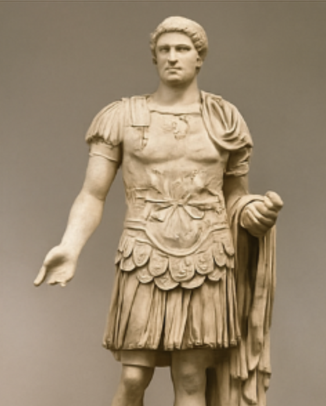

-
Il dipinto che mi ha colpito di più

Un'opera d'arte affascinante vista nella galleria principale Questo dipinto mi ha catturato per i suoi colori intensi e per l'espressione del volto del personaggio raffigurato. È come se raccontasse una storia senza parole.
-
Un'antica scultura
Scultura romana in marmo esposta nella sala archeologica. La scultura era alta quasi due metri e mostrava una ntico guerriero romano. I dettagli del viso e dell'armatura erano incredibilmente realistici.